Analiza rješenja · JOI Spring Camp 2020 · Dan 2
Sklapanje prijateljstava na Joitteru je zabavno
O ovom članku
Tekst je prijevod službene japanske prezentacije rješenja, preoblikovan u članak. Slajdovi su ugrađeni kao slike; natpis pod svakim slajdom je prijevod teksta na njemu. Dijelovi označeni kao trenerska napomena nisu u izvornoj prezentaciji — dodani su da popune korake koje slajdovi preskaču ili samo skiciraju.
Slajdovi
Uvod (i mala šala)
izvorni slajdovi 1–7
-
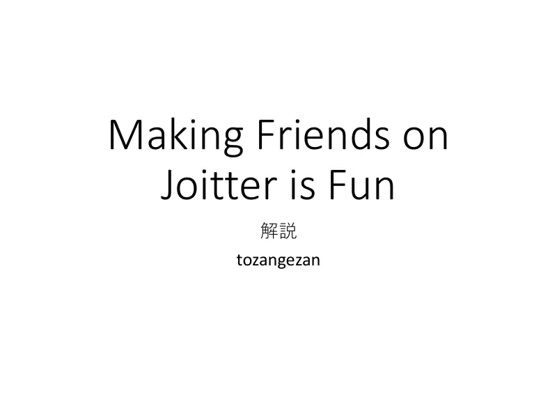
1Naslovni slajd: Making Friends on Joitter is Fun, analiza: tozangezan. -
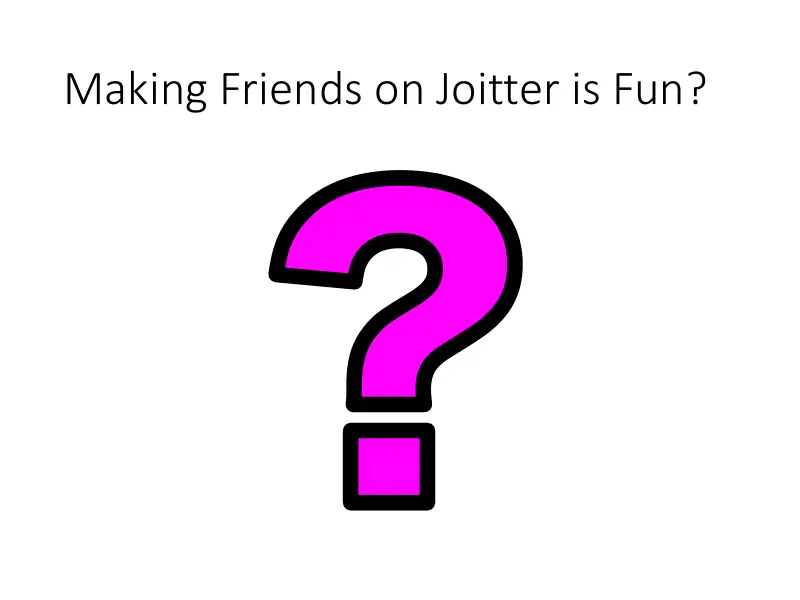
2Naslov zadatka s upitnikom. -
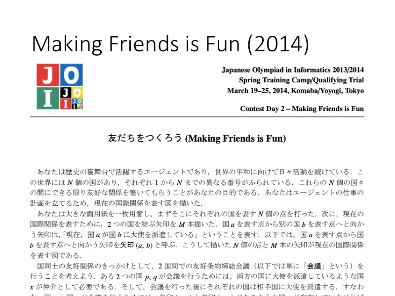
3Making Friends is Fun — zadatak s JOI Spring Campa 2014. -
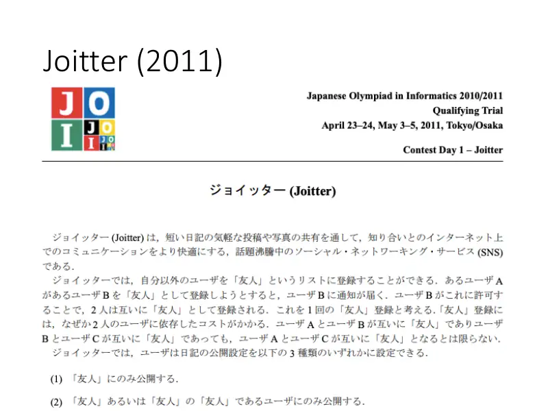
4Joitter — zadatak s JOI kvalifikacija 2011. -
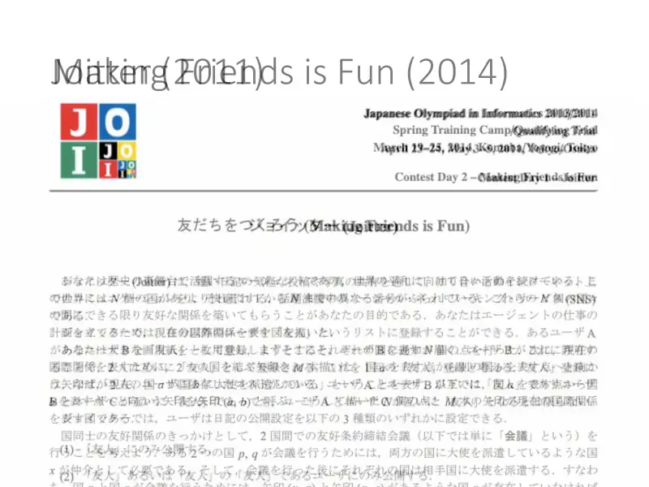
5Dva stara zadatka preklopljena… -
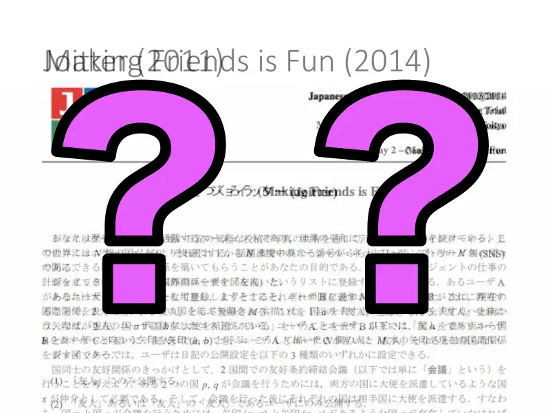
6…i mnogo upitnika: naslov je spoj dvaju starih naslova. -
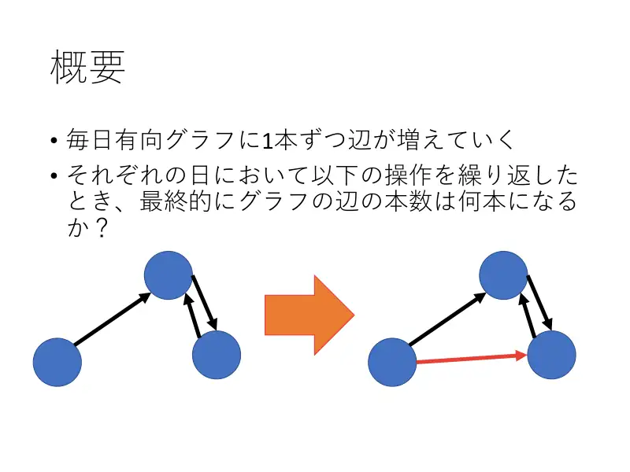
7Sažetak. Svaki dan u usmjereni graf dolazi po jedan brid; za svaki dan pitamo koliko bridova graf ima nakon ponavljanja operacije. Slika: $x \to y \leftrightarrow z$ daje novi (crveni) brid $x \to z$.
← → tipke ili klik na sliku
Podzadatak 1 1 bod
Slajd
izvorni slajd 8
-
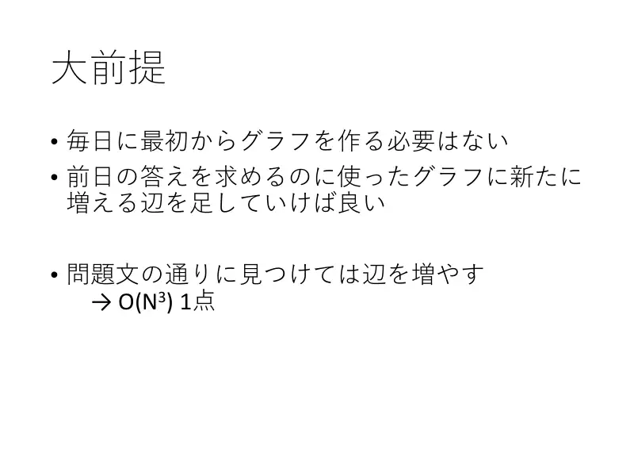
8Osnovno. Ne treba svaki dan graditi graf ispočetka: grafu s kojim smo izračunali jučerašnji odgovor samo dodamo novi brid. Traženje trojki i dodavanje bridova po definiciji → $O(N^3)$, 1 bod.
Opažanja
Koraci algoritma
Grupe, bridovi među grupama, lančana spajanja
izvorni slajdovi 9–11
-
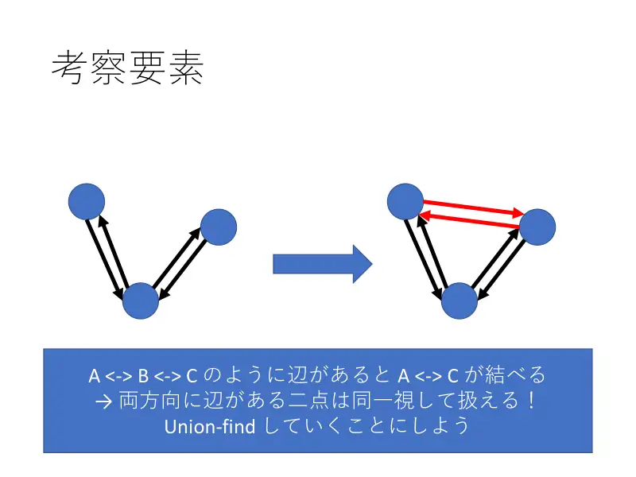
9Ako je $A \leftrightarrow B \leftrightarrow C$, nastaje $A \leftrightarrow C$: dva vrha s bridovima u oba smjera možemo identificirati. Koristimo union-find. -
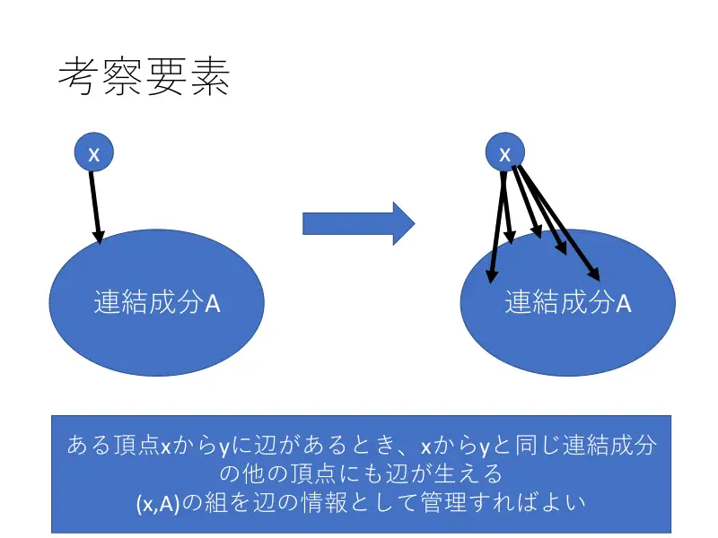
10Ako $x$ prati $y$, prati i sve ostale vrhove $y$-ove komponente. Zato brid pamtimo kao par (korisnik $x$, komponenta $A$). -
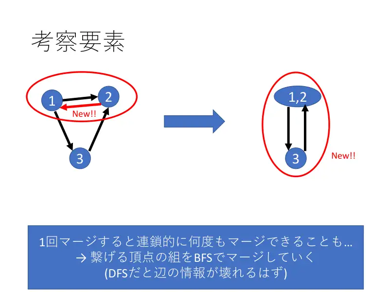
11Jedno spajanje može lančano izazvati nova: parove za spajanje obrađujemo BFS-om (DFS bi „razbio” informacije o bridovima usred obrade). Slika: komponente $\{1\}$, $\{2\}$, $\{3\}$ → $\{1,2\}$, $\{3\}$ → novo spajanje.
← → tipke ili klik na sliku
Podzadatak 2 16 bodova
Slajd
izvorni slajd 12
-
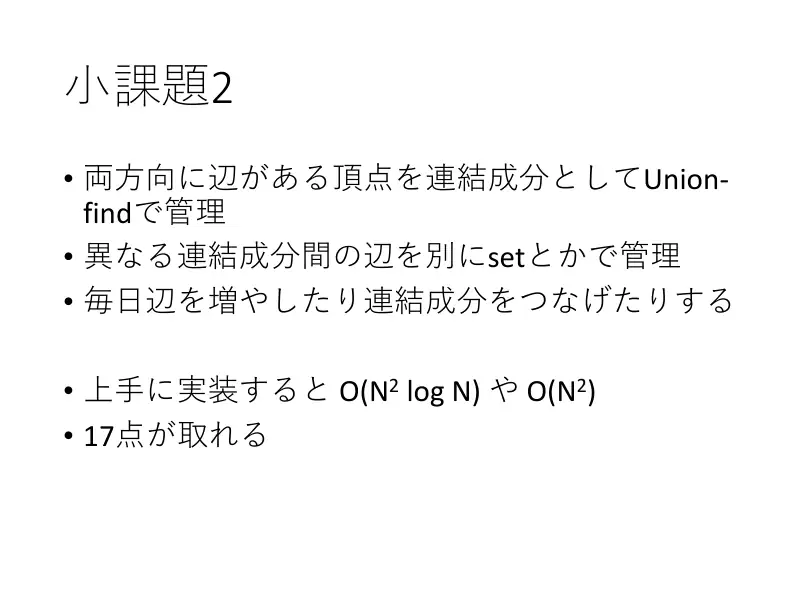
12Vrhove s bridovima u oba smjera držimo kao komponente union-finda; bridove među komponentama u set-ovima. Svaki dan dodaj brid i spajaj komponente. Uz urednu implementaciju $O(N^2\log N)$ ili $O(N^2)$; 17 bodova.
Podzadatak 3 83 boda
Slajd
izvorni slajd 13
-
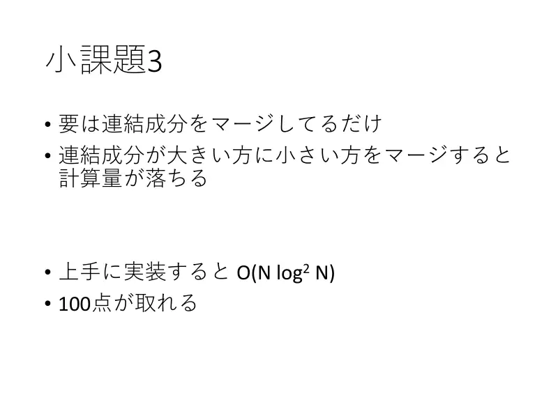
13Zapravo samo spajamo komponente. Spajanjem manje u veću složenost pada: uz dobru implementaciju $O(N\log^2 N)$, 100 bodova.
Slajdovi
Distribucija bodova i ponavljanje poruke
izvorni slajdovi 14–20
-
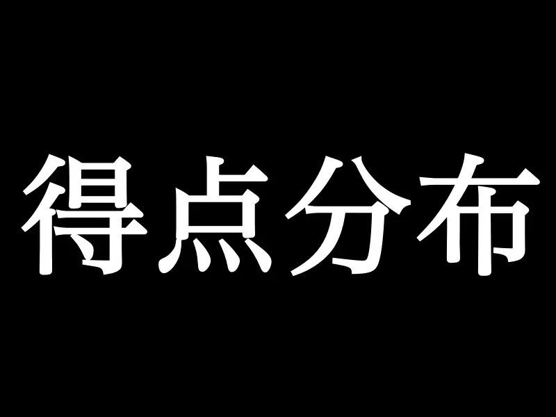
14Distribucija bodova. -
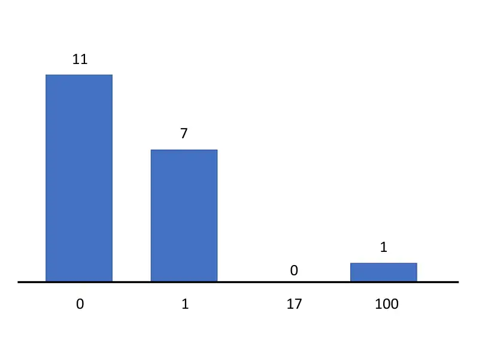
15Stupci: $0$ bodova — $11$ sudionika, $1$ bod — $7$, $17$ bodova — $0$, $100$ bodova — $1$. -
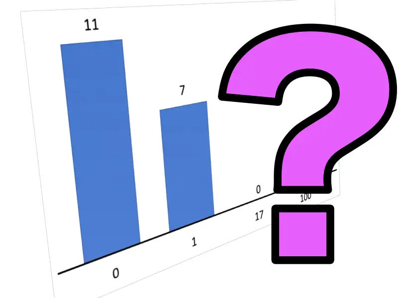
16Isti graf s velikim upitnikom: samo je jedan sudionik riješio zadatak. -

17(Ponovljeni slajd.) -

18Ponovno slajd podzadatka 3: „samo spajanje komponenata, manju u veću, $O(N\log^2 N)$ uz dobru implementaciju”. -
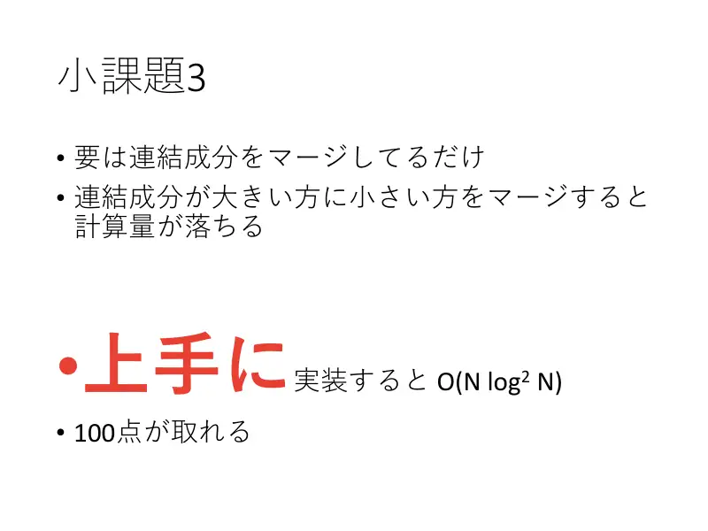
19Naglasak na „dobru” (上手に) implementaciju. -
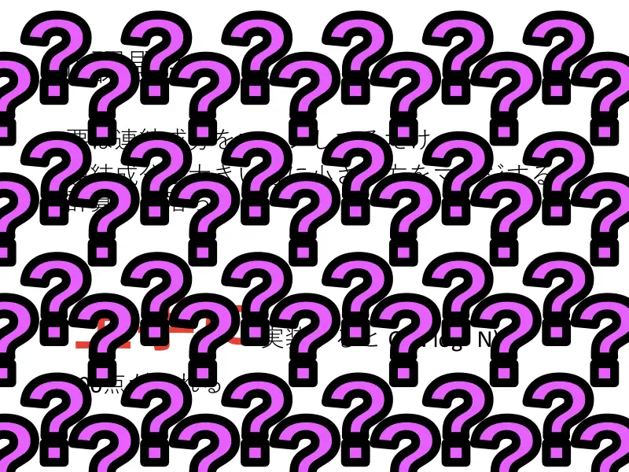
20…i tekst prekriven upitnicima: „dobra implementacija” je upravo ono što je većini nedostajalo.
← → tipke ili klik na sliku
Slajd
izvorni slajd 21
-
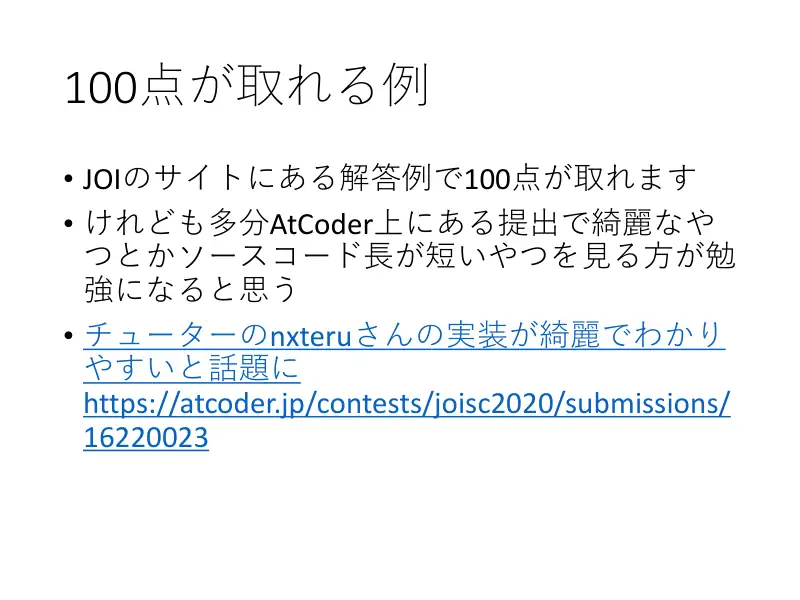
21Primjer za 100 bodova. Službeno rješenje s JOI stranice daje 100; još je poučnije pogledati čista i kratka rješenja na AtCoderu — spominje se posebno uredna implementacija tutora nxterua (AtCoder submission 16220023).
Sažetak
- Uzajamno povezani korisnici čine grupu (kliku); praćenje jednoga člana = praćenje cijele grupe.
- Praćenje između dviju grupa u oba smjera stapa ih; spajanja obradi redom (BFS).
- Odgovor $\sum c_G(c_G-1) + c_G p_G$ održavaj inkrementalno; spajaj manje u veće za $O(M\log^2 M)$.